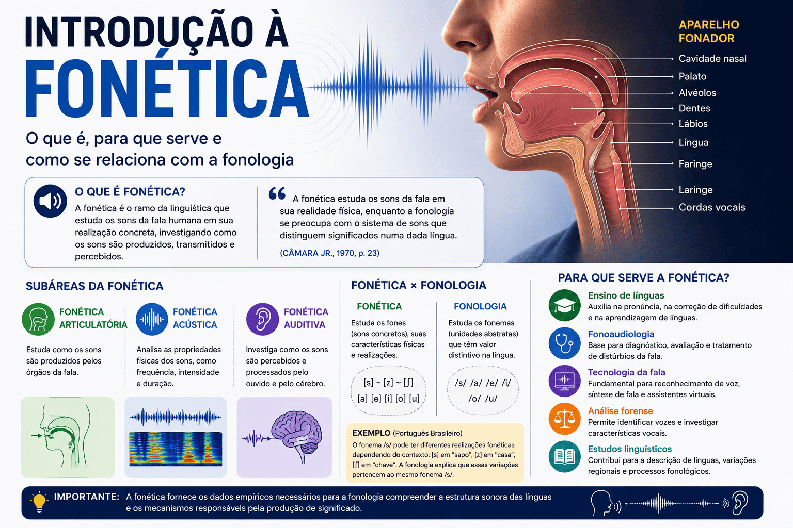

Introdução à Fonética: o que é, para que serve e como se relaciona com a fonologia
A linguagem humana constitui um dos fenômenos mais complexos investigados pelas ciências humanas e cognitivas. Entre os diversos níveis de análise da linguagem, a fonética ocupa uma posição fundamental por se dedicar ao estudo dos sons da fala em sua materialidade. Trata-se de uma disciplina que busca compreender como os sons são produzidos pelo aparelho fonador, transmitidos pelo meio físico e percebidos pelo sistema auditivo humano.
O estudo fonético permite descrever e analisar os mecanismos responsáveis pela comunicação oral, fornecendo subsídios para diversas áreas do conhecimento, como a Linguística, a Fonoaudiologia, a Psicologia Cognitiva, a Tecnologia da Fala e o Ensino de Línguas. Dessa forma, a fonética não se limita à simples observação dos sons, mas investiga sistematicamente os processos fisiológicos, acústicos e perceptivos envolvidos na fala humana.
Segundo Crystal (2010), a fonética é uma das áreas mais antigas da Linguística e desempenha papel essencial na descrição das línguas, pois possibilita compreender a natureza física dos sons utilizados pelos falantes em diferentes contextos comunicativos.
O que é Fonética?
A fonética é o ramo da Linguística que estuda os sons da fala humana sob uma perspectiva empírica e científica. Seu objeto de investigação são os sons efetivamente produzidos pelos falantes, conhecidos como fones, independentemente de sua função distintiva dentro de uma determinada língua.
Diferentemente da fonologia, que analisa os sons em um nível abstrato e funcional, a fonética concentra-se nas características concretas dos fenômenos sonoros, observando aspectos relacionados à articulação, à transmissão acústica e à percepção auditiva.
"A fonética estuda os sons da fala em sua realidade física, enquanto a fonologia se preocupa com o sistema de sons que distinguem significados numa dada língua. A primeira ocupa-se dos sons como fatos materiais; a segunda considera-os como elementos integrantes de um sistema linguístico."
(CÂMARA JR., 1970, p. 23).
A distinção entre fonética e fonologia representa um dos fundamentos da Linguística moderna. Embora ambas estudem os sons da linguagem, cada uma o faz sob perspectivas distintas e complementares. Enquanto a fonética investiga a realização concreta dos sons, a fonologia procura compreender como esses sons se organizam em sistemas que permitem a construção de significados.

Objeto de estudo da Fonética
O principal objeto de estudo da fonética são os sons da fala produzidos pelos seres humanos. Esses sons são analisados considerando-se três dimensões fundamentais:
- Articulatória: investiga os movimentos e posições dos órgãos fonadores durante a produção dos sons.
- Acústica: analisa as propriedades físicas das ondas sonoras, como frequência, intensidade, duração e espectro acústico.
- Auditiva: estuda os processos de recepção e interpretação dos sons pelo sistema auditivo humano.
Essas três perspectivas permitem uma compreensão abrangente do fenômeno sonoro linguístico, possibilitando a descrição detalhada dos diferentes sons utilizados pelas línguas naturais.
Para que serve a Fonética?
A fonética possui grande relevância científica e prática, sendo aplicada em diferentes campos do conhecimento. Sua contribuição ultrapassa os limites da Linguística teórica, alcançando áreas voltadas à educação, à saúde, à tecnologia e à investigação forense.
De acordo com Cristófaro-Silva (2003), o conhecimento fonético é indispensável para a descrição adequada das línguas, uma vez que fornece os dados necessários para a identificação dos padrões sonoros que posteriormente serão analisados pela fonologia.
Entre as principais aplicações da fonética, destacam-se:
- Ensino de línguas: auxilia no desenvolvimento da pronúncia, na correção de dificuldades articulatórias e na aprendizagem de línguas maternas e estrangeiras.
- Fonoaudiologia: fornece bases científicas para o diagnóstico, a avaliação e o tratamento de distúrbios relacionados à fala.
- Tecnologia da fala: contribui para o desenvolvimento de assistentes virtuais, sistemas de reconhecimento automático de voz e sintetizadores de fala.
- Linguística forense: possibilita a análise e identificação de características vocais utilizadas em investigações judiciais.
- Documentação linguística: auxilia no registro e descrição de línguas indígenas, minoritárias ou ameaçadas de extinção.
- Formação de professores: favorece a compreensão das relações entre fala, escrita, ortografia e variação linguística.
Além dessas aplicações, a fonética desempenha papel relevante na compreensão das variedades regionais do português brasileiro, permitindo descrever fenômenos como a palatalização, a nasalização e as diferentes realizações do /r/ e do /s/ em distintas regiões do país.
Subáreas da Fonética
Tradicionalmente, a fonética é dividida em três grandes subáreas, cada uma voltada para um aspecto específico do fenômeno sonoro:
-
Fonética Articulatória
Estuda os mecanismos fisiológicos envolvidos na produção dos sons da fala. Analisa a atuação dos órgãos fonadores, como pulmões, laringe, língua, lábios, dentes e palato.
-
Fonética Acústica
Investiga as propriedades físicas dos sons produzidos durante a fala. Utiliza instrumentos e softwares especializados para analisar espectrogramas, frequências e padrões acústicos.
-
Fonética Auditiva
Examina os processos relacionados à percepção dos sons da fala, considerando o funcionamento do ouvido humano e os mecanismos cognitivos envolvidos na interpretação dos estímulos sonoros.
Segundo Kent e Read (2015), essas três abordagens são complementares e formam uma cadeia contínua que envolve produção, transmissão e percepção dos sons linguísticos.
Relação entre Fonética e Fonologia
Embora frequentemente estudadas em conjunto, fonética e fonologia possuem objetivos distintos. A fonética descreve os sons enquanto fenômenos concretos e observáveis; a fonologia, por sua vez, investiga a organização desses sons dentro do sistema linguístico de uma comunidade de falantes.
Nesse sentido, a fonologia trabalha com os fonemas, unidades abstratas capazes de distinguir significados, enquanto a fonética analisa os fones, isto é, as realizações efetivas desses fonemas na fala.
Por exemplo, no português brasileiro, o fonema /s/ pode apresentar diferentes realizações fonéticas dependendo do contexto linguístico. Em palavras como casa, ocorre a realização sonora [z], enquanto em sapo aparece a realização surda [s]. Tais diferenças pertencem ao domínio da fonética, ao passo que a interpretação de sua função dentro do sistema linguístico constitui objeto da fonologia.
"O estudo fonético fornece subsídios para a fonologia ao descrever e classificar os sons, possibilitando que se estabeleçam padrões e regularidades em seu uso."
(CRISTÓFARO-SILVA, 2003, p. 19).
A relação entre fonética e fonologia é, portanto, complementar. Enquanto a fonética oferece os dados empíricos necessários para a descrição dos sons, a fonologia utiliza esses dados para compreender a estrutura sonora das línguas e os mecanismos responsáveis pela produção de significado.
Compreender essa distinção é fundamental para estudantes de Letras, Linguística, Fonoaudiologia e áreas afins, uma vez que os estudos fonéticos e fonológicos constituem a base para a análise científica da linguagem oral.
Referências
CÂMARA JR., Joaquim Mattoso. Princípios de linguística geral. 4. ed. Rio de Janeiro: Acadêmica, 1970.
CRISTÓFARO-SILVA, Thaïs. Fonética e fonologia do português: roteiro de estudos e guia de exercícios. 8. ed. São Paulo: Contexto, 2003.
CRYSTAL, David. Dicionário de linguística e fonética. Rio de Janeiro: Zahar, 2010.
KENT, Ray D.; READ, Charles. The acoustic analysis of speech. 3. ed. San Diego: Singular Publishing Group, 2015.